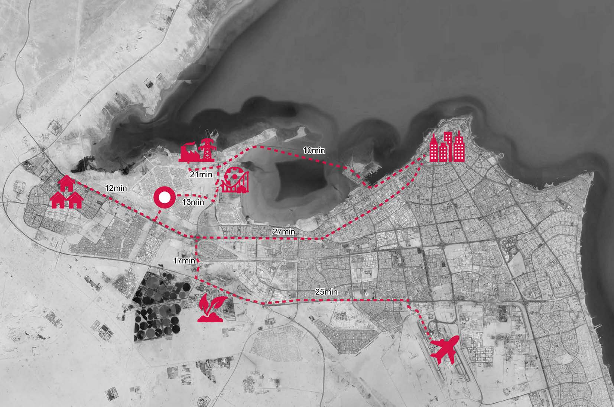
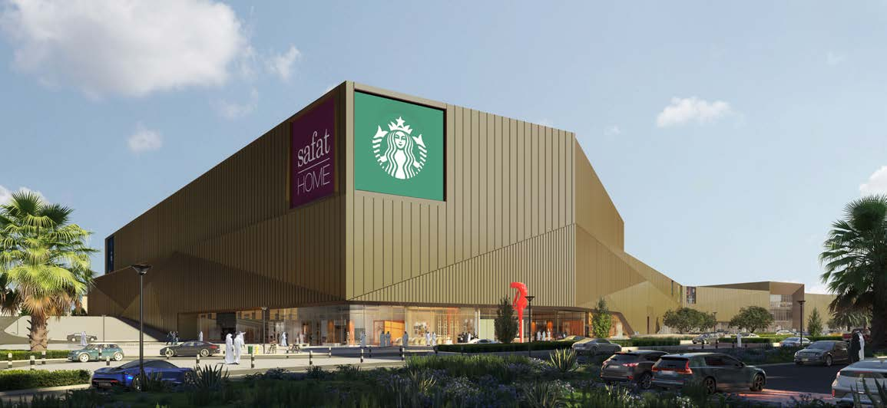
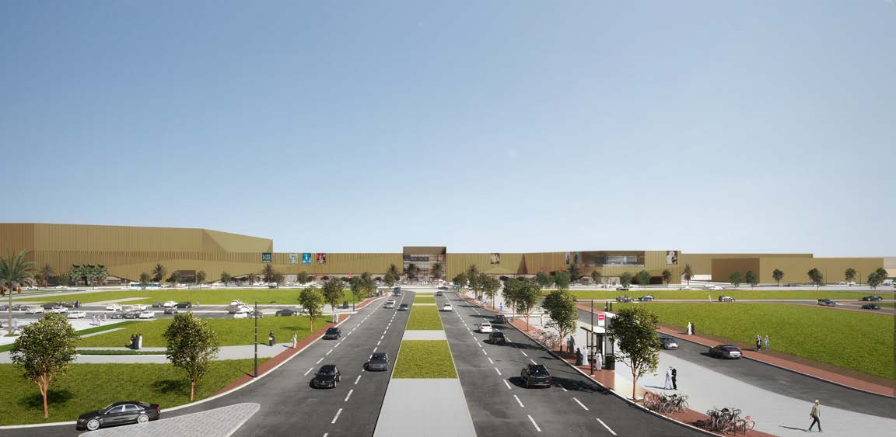
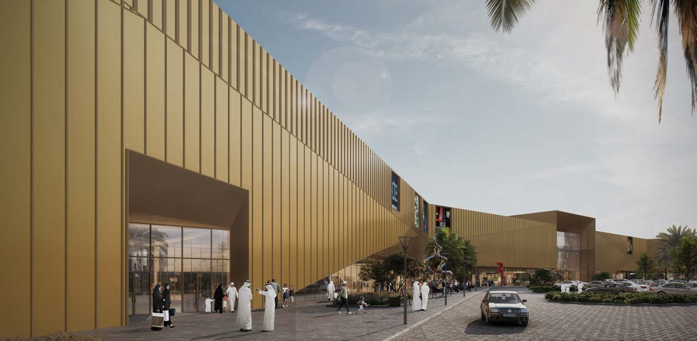
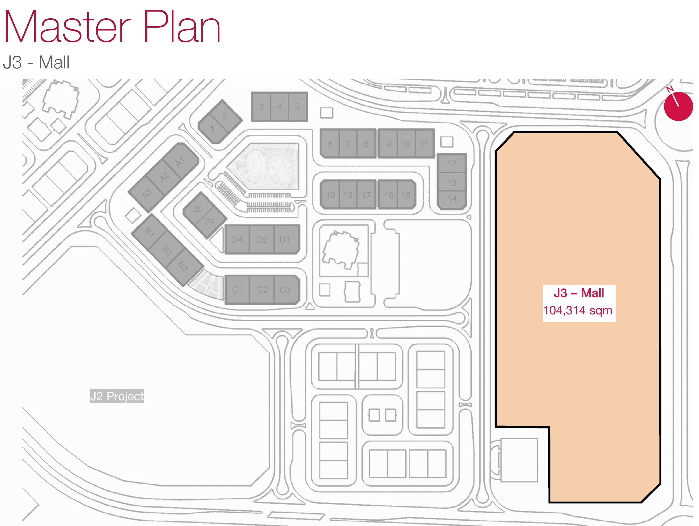
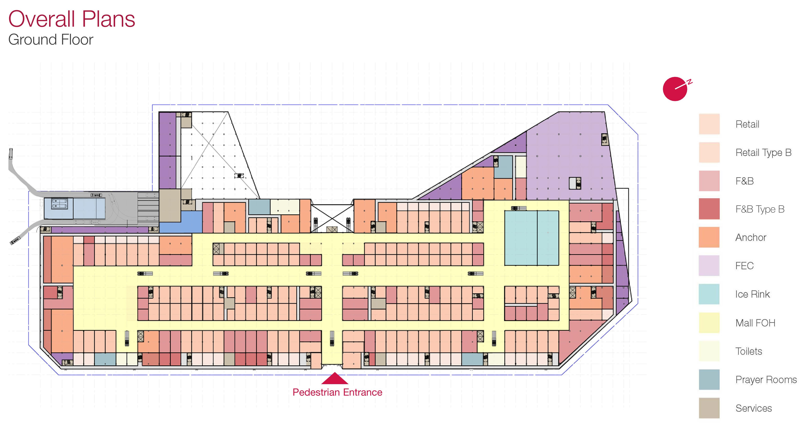

J3 MALL


J3 Mall is part of the Jaber Al-Ahmad City development, located on the periphery of Kuwait City and spanning an area of 12.5 km². The new city is well-connected through the existing road network — just 25 minutes from the airport and 27 minutes from Kuwait City. With the completion of the Sheikh Jaber Al-Ahmad Al-Sabah Causeway (Doha Link), downtown Kuwait City will be only 10 minutes away from Jaber Al-Ahmad City.




